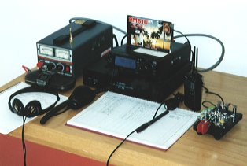
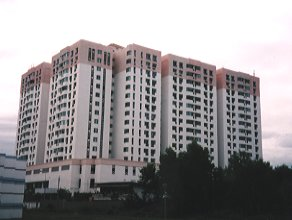
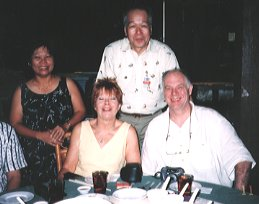
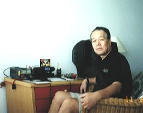

|
【再びコタ・キナバルへ】
マレーシア・サバ(SABAH)州のコタ・キナバルで11月1日から7日まで9M6JUの運用を行いました。
私のコタ キナバル(Kota kinabalu)の訪問は4回目、9M6JUでの運用は昨年11月に続き2度目でした。
今回は10月中旬にSABAH州の無線団体・SARSからの連絡で、1998年2月にSpratlyから運用したCDXCのDX Pedition「9M0C」のQSLマネジャーを務めてくれた、
G3SWH・Philが11月3日から14日までコタ・キナバルを訪れるとの連絡を貰い、彼のマレーシア訪問の歓迎を兼ねて、
当初予定していたKH0(Saipan)行きのスケジュールを急遽変更して出掛ける事になりました。
G3SWH・Philは「9M0C」のメンバーとしてDX Peditionには参加しませんでしたが「9M0C」の7万枚近いQSLを扱っているうちに、
マレーシアを訪問したくなったのでしょう。
Philはこの滞在期間に"テンポラリー・ライセンス"(3カ月の期間限定)で9M6PWTを運用する事になっていました。
【運用場所はマンション最上階】
11月1日の夕方、マレーシア航空の成田→コタ・キナバル直行便で無事に到着。
日本からサバ州のコタ・キナバルへの直行便は、現在マレーシア航空の月曜の朝の週一便だけです。
日本行きは日曜日の朝にクアラルンプールを発ち、コタ・キナバル経由で夕方成田着の一便。
西マレーシアのクアラルンプール経由の便は毎日何便も飛んでいますが、約半分の時間の片道5時間程のフライトで済むこの直行便は魅力です。
ただし、往復直行便に乗ろうとすると必然的に最短でも一週間の旅行日程になってしまいます。
空港に迎えに来ていた9M6SU・Donaldの車で今回の運用(宿泊)場所に向かいました。
昨年(1998年)の訪問では、コタ・キナバル市街から南に20Kmほど離れた海辺のホテル(ロッジ)が運用場所でしたが、
今回の場所は市の中心部から車で10分ほどの所でした。
15階建てのホテル兼、長期滞在者用の"賃貸・マンション"は、一階がショッピング街、レストランからスーパーマーケットまで揃っていて、
"独身生活者"には便利な場所でした。
一週間滞在する事になった最上階(15階)の部屋はリビングルーム、ダイニングキッチン、ベッドルーム３室、
浴室１、シャワー室１、トイレ２の大きな部屋で、調理器、冷蔵庫、レンジ、トースターまで付いて、
一日 RM88(１マレーシアドル＝約30円)、日本円で約2,700円！でした。
"ホテル"のチェックインの手続きをしているところに9M6GY・Godfreyと9M6JY・Stellaご夫妻が、
50MHzの4ele・HB9CVとアンテナマストを持って駆けつけてくれました。
取り合えず暗くなる前に50MHzのHB9CVだけを上げる事にしました。アンテナの建設は申込みの時に事前に屋上の使用許可を得てありました。
この6mのHB9CVは、昨年9M6JUを運用したときのものです。普段は9M6GY/9M6JYが自宅で使っていますが、滞在期間だけ拝借することにしました。
アンテナからの引き込みの同軸ケーブルは部屋が最上階のため20mもあれば十分でした。
50.110MHz付近でテスト電波を出すと、さっそく9M6CT・Philが呼んできました。
Philも一週間ほど前にホンコンからコタ・キナバルに戻っていて、今回は3カ月ほど滞在する事になっているとの事でした。
到着したこの日は、準備や打ち合わせで時間を取られ、一段落したのは14:00zを廻ってからでした。この日は6mでJAと10局程QSOして終了。


(右)運用場所となったホテル兼"賃貸マンション"。手前中央部分の最上階が"シャック"
(左)RIGはYAESU FT-1OO + FC-20
【9M6-JAのコンデション】
この時期の9M6とJA間の6mのコンデションは、午前中はほとんどオープンが無く、午後も早い時間帯のオープンはJA8、JA7などの北日本だけ。
JAの信号が強力に聞こえ出すのは、毎日05:00z(14:00JST)頃からで、このオープンは夕方(10:00z頃)になって一段落。
この後、12:00z(21:00JST)頃から再びJAの信号は上昇して来ますが、入感してくる方向は真北方向からでした。
アンテナがJAに向いていると4eleでも信号レベルはかなり落ちてしまいます。
この時間帯のオープンではホンコン(VR2)方面が呼んできますので、この方向からのスキャッター気味の伝搬なのかも知れません。
時々日本からQSOをしていた9M6GY・9M6JYは、アンテナをJA方向に固定したままでローテータを使っていなかったとの事なので、
遅い時間帯にオープンしても、なかなか応答して貰えなかったのはこれが"理由"だったのかも知れません。
この夜間のJAとの伝搬や朝の太平洋方向、夜間のアフリカ、夕方のヨーロッパとのQSOのためには、アンテナを頻繁に廻す必要がありました。
部屋から屋上が近いとはいえこれは直線距離で、アンテナを廻しに屋上に出るのはかなりの距離を歩かなければならず大変でした。
スピーディーに対応するためにはやはりローテーターの必要性を感じました。
翌日、9M6GYに話してローテーターを持ってきて貰いました。これで屋上を往復することも無くなりました..."感謝"。
【G3SWH夫妻を歓迎する会】
11月4日夜、前日の深夜に到着したG3SWHご夫妻を迎えて市内の"水上レストラン"で歓迎会が開催されました。
このレストランは1998年の「9M0C」のDX Peditionの時にも英国のCDXCの歓迎会が行われた場所です。
この日は9M6CT、9M6GY、9M6JY、9M6LK...など13局の9M6'sが集まりました。


(左)G3SWHご夫妻を囲んで歓迎の宴
(右)左側から9M6JY、G3SWH/XYL、G3SWH、後方は9M6JU(JA1RJU)
【ヨーロッパとのQSO】
今回の運用の目的は"JA以外との6mでのQSO"でした。
最近は6mでも9M6のアクティビティが上がり多くの局が運用するようになり、
6mでは"珍しいカントリー"ではなくなりました。
しかし、南米・北米、アフリカ、ヨーロッパからはまだ9M6はHF帯でも珍しく、
6mとなると"超"が付くレア・カントリーとなっています。
コンデションは最高とは言えないまでも、秋のDXシーズンのこの時期に、
「JA以外」とのQSOに期待しての運用でした。
初のヨーロッパとのQSOのチャンスは11月5日に訪れました。
前日、JAとヨーロッパがオープンしたとの情報を得て、狙っていた矢先のオープンでした。
初のヨーロッパは07:50zに50.110MHzで入感したOH2BCでした。
9M6で聞くヨーロッパからの信号はJAで聞くよりかなり強力です。
OH2BCとの初QSOの後、ES1CW、ES1MW、SM3BIU...などが次々に呼んできました。
オープンの時間は短いものでしたが初めての9M6からのヨーロッパとのQSOは"鳥肌が立つ"ような感激でした。
滞在中のヨーロッパとのQSOは、結果的にはこの日だけでしたが、
帰国日の11月7日の夕方に9M2NK(West Malaysia)がヨーロッパとのQSOに成功しています。
9M6→ヨーロッパの伝搬は、スキャッターではなくダイレクトのパスで聞こえてきました。
100Wに4ele HB9CVでも十分にQSOは可能でした。
今回の滞在期間中に6mでQSO出来たJA以外のDX局は下記の通りです。
期待した太平洋方面とアフリカ本土、中近東方面のオープンが無かったのが残念ですが、機会を見てまたトライしてみたいと思っています。
11/1 9M6CT
11/2 HL1LTC
11/3 VQ9DX
11/5 OH2BC
ES1CW ES1MW
SM3BIU
VR2LC VR2XRW VR2IL VR2XMT
YC1CBI YC1MH
11/6 VK8MS
11/7 9M6GY

9M6JUを運用するJA1RJU
|